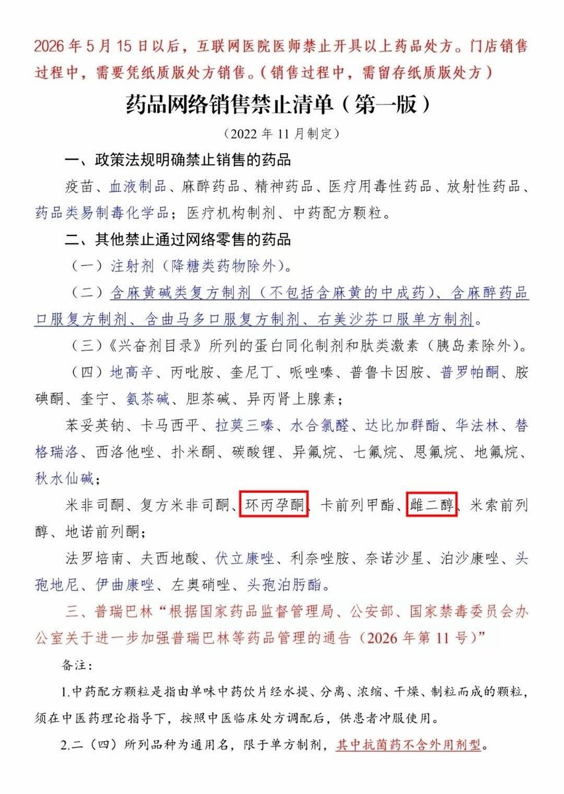
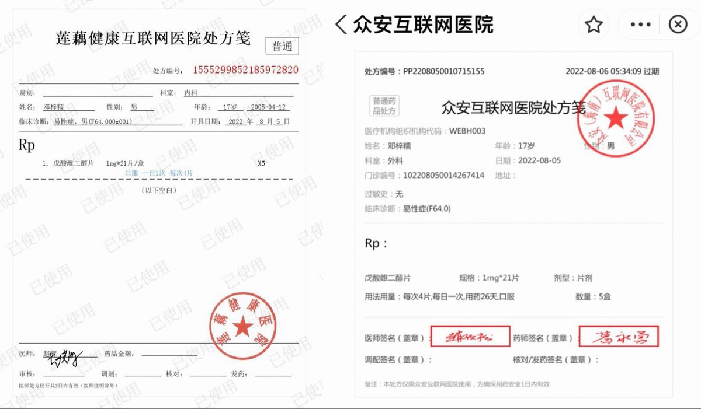

🌙艾丝尔娜·芙蕾琳🌙ᴹᴷ⁻ᴱᵐᵇᵉʳ
@AacerF59616
至少我确实没感觉到获取雌二醇的难度有什么提升，拿个女证依旧六盒六盒的买。说来说去感觉还是小证可能没用的问题，我对所谓的「正规治疗」没有任何好感，也不打算遵守什么医疗规范，小证在我看来也就是张破纸罢了


梓糯🏳️⚧️🇹🇼🇨🇦
@Mirro_zinuo
這個事情我在2022年就警告過，當時我也是關於草案意見徵集的信訪運動及上訪運動發起人。
後來的事情大家也知道了，牢糯喜提一年十個月有期徒刑，罪名是：尋釁滋事罪。 https://t.co/rk3eXRQeJb